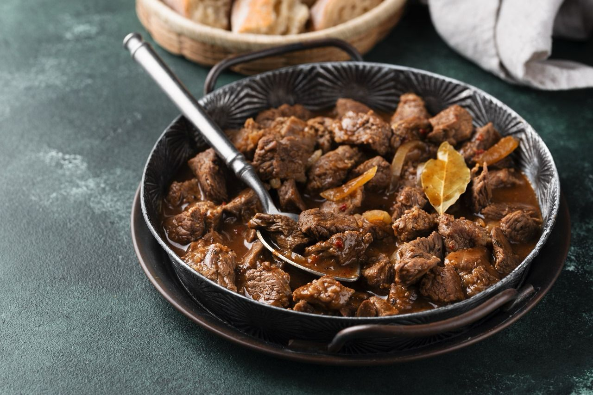

Menu
Rendang
Di Restoran Kapau, Rendang tidak hanya sekedar hidangan, tetapi juga kisah panjang tentang tekad dalam meramu rasa. Daging yang empuk, direndam dalam hamparan rempah khas, dan dimasak hingga mencapai puncak kelezatan, menghasilkan Rendang yang mengundang dalam setiap gigitannya. Pengalaman menggigit potongan daging yang mencair di mulut adalah perjalanan lewat waktu, membawa kita pada akar budaya Minangkabau yang kaya. Melalui Rendang, kami dengan bangga mengundang Anda untuk merasakan sentuhan keahlian tradisional yang telah kami wariskan dari generasi ke generasi, dalam setiap aroma dan cita rasa yang terpancar.
Ayam Bakar

Di Restoran Kapau, suatu pengalaman kuliner yang tak terlupakan menanti Anda dengan hidangan favorit kami yang tak tertandingi: Ayam Bakar. Melibatkan perpaduan kekayaan rasa tradisional dan penyajian modern yang memikat, Ayam Bakar kami adalah simbol kehangatan dan cinta terhadap kuliner Minangkabau. Setiap potongan ayam, direndam dalam bumbu-bumbu rahasia yang mencakup rempah-rempah alami dan bahan berkualitas, kemudian dipanggang hingga kecokelatan yang menggugah selera. Saat Anda menyantap setiap suapannya, cita rasa Ayam Bakar kami akan memanjakan lidah Anda dengan sentuhan asap yang lembut dan gurih. Dengan setiap gigitan, Anda akan merasakan harmoni sempurna antara rasa tradisional dan sentuhan inovasi kuliner modern. Ayam Bakar di Restoran Kapau bukan hanya sebuah hidangan, tetapi juga kisah yang membawa Anda dalam perjalanan kenikmatan rasa dan warisan budaya yang tak ternilai.
Ikan Bakar

Di puncak pengalaman kuliner di Restoran Kapau, hadir suatu hidangan yang merangkul kekayaan laut dan bumbu-bumbu tradisional: Ikan Bakar. Sebagai pilihan favorit yang tak terbantahkan, Ikan Bakar kami menghadirkan sentuhan yang luar biasa dari bawah laut ke atas meja Anda. Setiap potongan ikan segar, dibalut dalam campuran rempah-rempah dan bahan alami yang dipilih dengan teliti, kemudian dipanggang dengan kecermatan yang tinggi hingga menjadi kecokelatan yang menggugah selera. Setiap suapan Ikan Bakar kami membawa Anda dalam perjalanan rasa yang melampaui kata-kata, dengan perpaduan tekstur ikan yang lembut dan rasa bumbu yang meresap hingga ke dalam setiap seratnya. Dari deru api panggangan hingga aroma bumbu yang memikat, Ikan Bakar di Restoran Kapau adalah perwujudan dari dedikasi kami dalam menjaga rasa autentik Minangkabau yang memanjakan lidah dan hati setiap pengunjung kami.
Outlet
Kami sangat senang berbagi dengan Anda tiga lokasi unggulan kami yang dapat Anda kunjungi
- Jalan Boulevard Timur FX2/3
- Jalan Cempaka Putih Raya No.3
- Jalan Darmawangsa No.5
Alamat pertama kami terletak di Jalan Boulevard Timur FX2/3, yang tersembunyi di antara hiruk-pikuk kota Kelapa Gading, Jakarta Utara. Kami dengan bangga mengundang Anda untuk merasakan kenikmatan kuliner kami yang autentik di lingkungan yang hangat dan ramah.
Kunjungi lokasi kedua kami di Jalan Cempaka Putih Raya No.3, di mana kelezatan kuliner Minangkabau bersatu dengan nuansa elegan. Kami telah menyiapkan suasana yang sempurna untuk Anda menikmati makanan favorit kami.
Terakhir, kami membuka pintu kami di Jalan Darmawangsa No.5, tempat kami menawarkan perpaduan kekayaan rasa dan nuansa klasik. Dalam lingkungan yang penuh karakter, kami mengundang Anda untuk mengeksplorasi beragam pilihan makanan yang kami tawarkan.
Dengan penuh semangat, kami mengajak Anda untuk menjelajahi tiga lokasi kami yang menakjubkan ini. Setiap outlet kami memiliki ciri khasnya sendiri, tetapi semuanya memiliki satu hal yang sama: dedikasi kami untuk memberikan pengalaman kuliner yang luar biasa bagi Anda. Terima kasih telah memilih Restoran Kapau sebagai tujuan kuliner Anda, dan kami tak sabar untuk menyambut Anda di salah satu dari alamat-alamat istimewa kami.